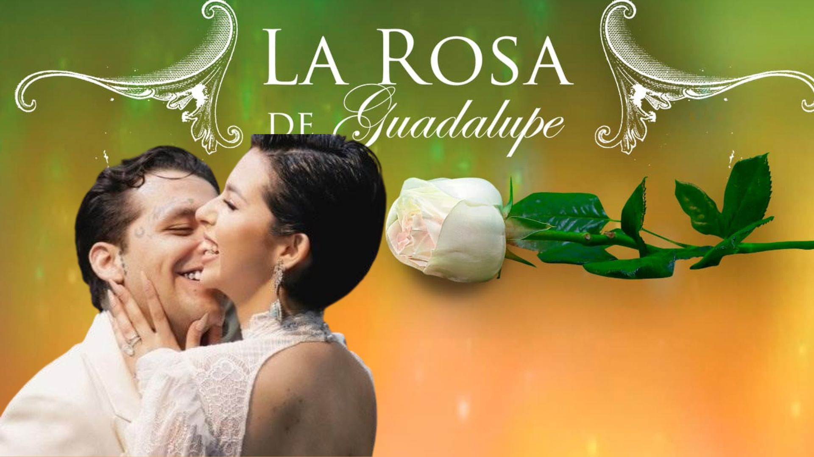

¿Como influye en nuestras expectativas?
El amor romántico en los medios puede tener tanto influencias positivas como negativas en los jóvenes. Es crucial ser críticos con estas representaciones y fomentar una visión más equilibrada y realista del amor y las relaciones en la vida real
Amor fucticio
Volver a la pagina principal